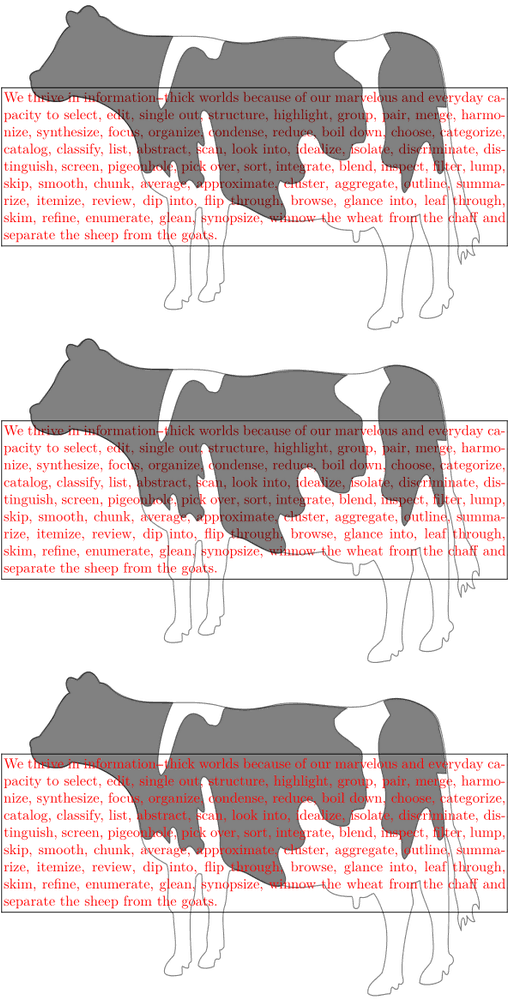

Contents
Defining colors and supported color models
- CMYK , typically used for printing
- RGB , HSV/HSL and HWB , typically used for screen display,
- Transparency on wikipedia.
- Spot colors typically used for offset printing ( Spot colors on wikipedia).
New colors may be defined in the following ways
| Name | Syntax (and Example) | Explanation |
|---|---|---|
| RGB color model | \definecolor[...][r=..., g=..., b=...] For example, \definecolor[lime][r=0.75, g=1, b=0] This is \color[lime]{a new color} that we defined |
The values for r, g, and b are floating point number between 0 and 1.
|
| CMYK color model | \definecolor[...][c=.., m=.., y=.., k=..] For example, \definecolor[lime][c=0.25, m=0, y=1, k=0] This is \color[lime]{a new color} that we defined |
The values for c, m, y and k are floating point number between 0 and 1.
|
| HSV/HSL color model | \definecolor[...][h=.., s=.., v=..] For example, \definecolor[lime][h=75, s=1, v=1] This is \color[lime]{a new color} that we defined |
The value for h (hue) is between 0 and 360; the values for s (saturation), v (value/brightness) are floating point numbers between 0 and 1.
|
| HWB color model | \definecolor[...][h=.., w=.., b=..] For example, \definecolor[something][h=75, w=0.5, b=.1] This is \color[something]{a new color} that we defined |
The value for h (hue) is between 0 and 360; the values for w (whiteness), b (blackness) are floating point numbers between 0 and 1. This mostly unknown color model is also used in CSS3/SVG.
|
| Hex | \definecolor[...][x=...] For example, \definecolor[lime][x=BFFF00] This is \color[lime]{a new color} that we defined |
The value for x is a three-byte hexadecimal number where the bytes represent the red, green, and blue values. This follows the HTML and CSS style of defining colors.
|
| Gray scale | \definecolor[...][s=...] For example, \definecolor[screen][s=0.5] This is \color[screen]{a new color} that we defined |
The value for s is a floating point number between 0 and 1, representing the grayness value (1 represents white, 0 represents black).
|
Defining group of colors
See \definecolorgroup and \showcolorgroup.
Transparency
Defining transparent colors
You can define transparent colors through setting t and a, e.g. t=0.5,a=1, where the first is the opacity and the latter the transparency mode (there are 17).
Beware, some PDF viewers and printshops can't handle transparencies in PDF!
In the following example by Hans Hagen the yellow blocks have been added to demonstrate the order in which the blocks are drawn on the page; the first yellow block is behind the transparent red and blue blocks, while the second is in front of them.
-
\setuppapersize[A6] \setupcolors[state=start] \definecolor [transparentred] [r=1,t=.5,a=1] \definecolor [transparentblue] [b=1,t=.5,a=1] \definecolor [solidyellow] [y=1,t=1,a=1] \starttext This is some sample text that goes behind the rectangles\hskip-8cm \blackrule [width=2cm,height=1cm,depth=1cm, color=solidyellow]\hskip-0.67cm \blackrule [width=2cm,height=2cm, color=transparentred]\hskip-0.67cm \blackrule [width=2cm,height=1cm, depth=1cm,color=transparentblue]\hskip-0.67cm \blackrule [width=2cm,height=2cm, color=solidyellow]\hskip2cm. \stoptext
-

Transparency modes
There are different algorithms for "mixing" transparent colors with their background, maybe you know them from the layer settings in Photoshop.
- 0 none
- 1 normal
- 2 multiply
- 3 screen
- 4 overlay
- 5 softlight
- 6 hardlight
- 7 colordodge
- 8 colorburn
- 9 darken
- 10 lighten
- 11 difference
- 12 exclusion
- 13 hue
- 14 saturation
- 15 color
- 16 luminosity
They are defined in mkiv/lpdf-col.lua and demonstrated in the color manual.
Transparent images
Since October 2016, you can also make external figures and every other element transparent using \definetransparency and \starttransparent.
-
\definetransparency [tnormal] [a=normal,t=.5] \definetransparency [tmultiply] [a=multiply,t=.5] \definetransparency [tdifference] [a=difference,t=.5] \startoverlay {\framed [width=10cm,align=normal,foregroundcolor=red] {\input tufte }} {\starttransparent[tnormal] \externalfigure[cow.pdf][width=9cm] \stoptransparent} \stopoverlay \startoverlay {\framed [width=10cm,align=normal,foregroundcolor=red] {\input tufte }} {\starttransparent[tmultiply] \externalfigure[cow.pdf][width=9cm] \stoptransparent} \stopoverlay \startoverlay {\framed [width=10cm,align=normal,foregroundcolor=red] {\input tufte }} {\starttransparent[tdifference] \externalfigure[cow.pdf][width=9cm] \stoptransparent} \stopoverlay
- 
Rendering
Acrobat Reader might not render transparency using RGB in a PDF that is displayed on a monitor. If the colours do not appear correctly, add the following code:
\setupcolors[pagecolormodel=auto]
In Acrobat, when transparency is used, a different route is followed (at least in the past) when rendering. Rendering colorspaces might be adapted to the output medium so it's a combination of colorspace, monitor/paper, calibration, knockout/overprint, transparency groups, assumptions, and so forth.
Cloning existing colors
You can clone an existing color using
\definecolor[new-color][old-color]
For example
\usecolors[xwi] \definecolor[highlight][yellow] \defineframed [important] [location=low, frame=off, background=color, backgroundcolor=highlight] This is an \important{important}word. \definecolor[highlight][lavenderblush] This is a \important{important}word. |
|
Adapting existing colors
| TODO: add details about this (See: To-Do List) |